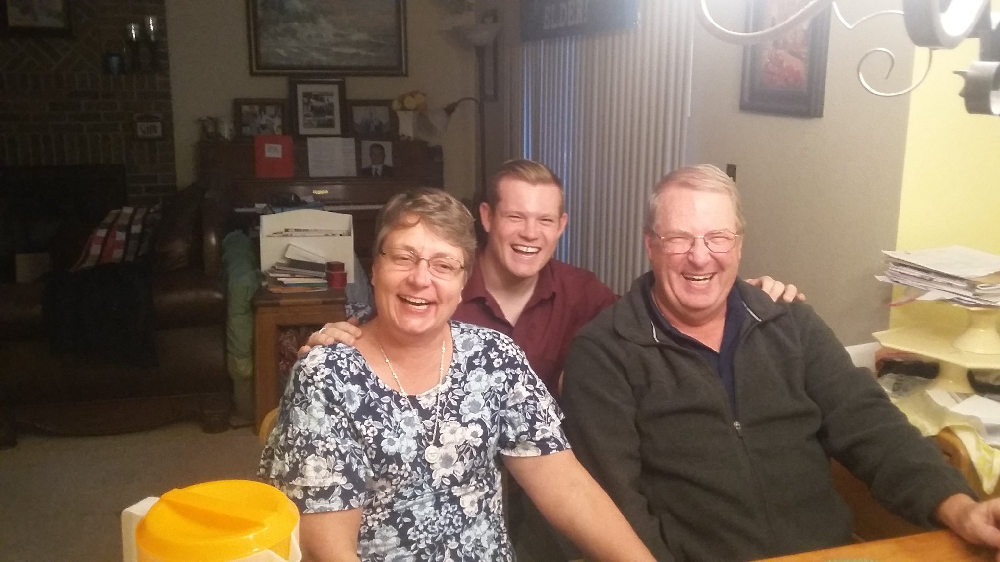

My Families

This is a picture of my with my parents-in-law. This picture was taken just after my mission, and while my wife was still on her mission.
My wife (girlfriend at the time) had been off of her mission for almost 4 months when her mom went into the hospital. The doctors shared that she had stage 4 ovarian cancer. This was going to be a huge issue in which surgery and chemo were needed to beat the cancer. It was also a time in which my wife and I were getting close to engagement. I knew that this was a huge struggle because I had a grandma that ultimately died to cancer. Even though I wanted to help, there wasn’t much that I could do to help. Thankfully it was only a few months later that it was found that the chemo was working. It was during this time that she was on chemo that my wife and I decided to get married and had decided to get married in December of that year. This would be a challenge to keep my mother-in-law healthy. We thought and prayed if it was right to get married in December, or if we should push it past the new year. We felt strongly that we should keep it in December even though some extended family was not happy about that. My mother-in-law agreed that we should do it in December. My wife and I were able to get married in December of 2019 because we all followed the Spirit and nothing bad happened. It wasn’t until April 2020 that we found out why we were supposed to get married in December. The challenge of COVID would have been much more difficult to get married and ensure my mother-in-law’s safety.
This is a picture of when I just came home from my mission with my parents and my sister.
One of my favorite stories with my mom was when I was around 13 years old. I had just been called as the Deacon’s quorum president, and I was assigned the duty to give the Bishop a list of names for my counselor’s. I had been passively thinking about it throughout the week. Saturday night came, and I was still not ready to submit any names to the Bishop. My mom offered to take me to the Temple just to drive around it and try to facilitate the Spirit. We got to the Temple and I started by writing down a list of all of my friends’ names. We both prayed, my mom prayed verbally, and I prayed in my heart. We drove around the temple many times, and eventually I had a list. The list somewhat troubled my parents because there was a kid on the list that was known for intentionally causing problems with me. I said that I had prayed about it and that was the list. This experience taught me much about the Spirit and the Temple. It all came from a small offer to help from my mom.
I was playing tackle football around 6th or 7th grade on a competitive team (not with a school). My dad was not a coach, though he would have been a better coach than almost every one of my coaches throughout this time. After games and practices, he would try to help me learn what I could do better. After one particular game in which I did not play my best (but still did really well), my dad wanted to talk about what I could do to get better. I don’t remember anything of the coaching except for him saying “I know that you have way more potential than even what you are showing now.” This was a huge eye-opener in the confidence that he had in my abilities, and why he pushed me to do better. Not because he wanted to force something out of me, but for me to reach my full potential.